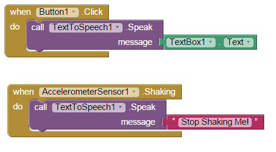

'Talk To Me' Text-to-Speech App
Created: February 3, 2015
This mobile application takes any text and converts it into computerized speech that can then be listened to. It was created in the course Game Design 2 using MIT App Inventor, and their tutorials which can be found here and here.
The code, in the form of a block interface, detects a click of the button and simply converts the presented text to speech. There is an additional function which speaks if the device is shaken.
